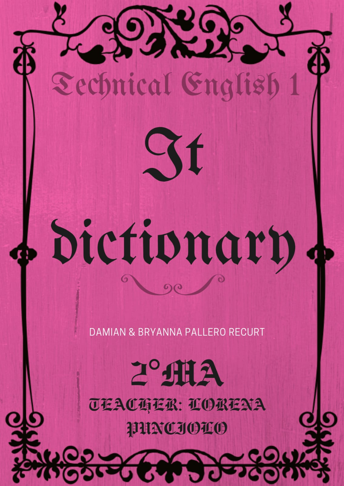

Index:
| A | B | C |
|---|---|---|
| D | E | F |
| G | H | I |
| J | K | L |
| M | N | O |
| P | Q | R |
| S | T | U |
| V | W | X |
| Y | Z |
Definition: The middle part of the day, from noon to evening.
Translation (Spanish): tarde
Example: "See you this a/noon @ Joe's." (Text message)
Definition: Low-level programming languages that use symbolic names (mnemonics) and abbreviations (like ADD, SUB, MPY) to represent machine code instructions. They are translated into machine code by an assembler and are closer to human-readable form than raw binary, but still closely tied to the hardware.
Translation (Spanish): lenguaje ensamblador.
Example: "Assembly languages were the first attempt at abstracting machine code into human language."
Definition: Abbreviation for "be."
Translation (Spanish): ser / estar
Example: "Gonna b late!" = "Going to be late!"
Definition: Used to introduce an additional or unrelated point.
Translation (Spanish): por cierto
Example: "BTW, did you finish the homework?"
Definition: To speak to someone using a phone.
Translation (Spanish): llamar
Example: "I’ll call you later."
Definition: Modal verb meaning "to be able to." In reported speech, it changes to "could."
Translation (Spanish): poder
Example: "We can help you." → Will said they could help me.
Definition: A disc used to store music or data.
Translation (Spanish): disco compacto
Example: "You’ll love my new CD!"
Definition: To have an informal conversation, especially online.
Translation (Spanish): chatear
Example: "They’re chatting on Messenger."
Definition: A talk between two or more people.
Translation (Spanish): conversación
Example: "We had a long conversation about texting."
Definition: Past tense of "can," used in reported speech.
Translation (Spanish): podía / podría
Example: "He said he could come tomorrow."
Definition: A program that translates source code written in a high-level language into machine code (or sometimes an intermediate code) all at once, producing an executable file that can run independently.
Translation (Spanish): compilador
Example: "Before being published, code must go through a compiler to create an executable file."
Definition: The exact words someone said, usually in quotation marks.
Translation (Spanish): discurso directo
Example: "I am tired," she said.
Definition: Careful and private; not attracting attention.
Translation (Spanish): discreto
Example: Text messaging is discreet—you can send messages without anyone knowing.
Definition: A message sent electronically over the internet.
Translation (Spanish): correo electrónico / email
Example: "Send me an email with the details."
Definition: Symbols like `:-)` or `:-(` used to show feelings in messages.
Translation (Spanish): signo de emoción / emoji
Example: `:-)` = happiness, `:-(` = sadness
Definition: To give someone support or confidence.
Translation (Spanish): animar / alentar
Example: "Texting encouraged men to flirt."
Definition: To behave playfully with someone you are attracted to.
Translation (Spanish): coquetear
Example: "Text messages are a good way to flirt."
Definition: To receive something.
Translation (Spanish): recibir
Example: "Did you get my text?"
Definition: Used to talk about the future; often shortened to "gonna" in informal writing.
Translation (Spanish): ir a + infinitivo
Example: "I’m gonna be late."
Definition: The rules of a language.
Translation (Spanish): gramática
Example: Cyber-English has new grammar rules.
Definition: Text message abbreviation for "hate."
Translation (Spanish): odiar
Example: "I H8 U!" = "I hate you!"
Definition: Feeling joy or pleasure.
Translation (Spanish): felicidad
Example: "I’m so happy!" → ":-)"
Definition: The physical components of a computer system such as the CPU, memory, storage devices and input/output devices that carry out the instructions given by software.
Translation (Spanish): none (used as is)
Example: "The hardware provides the software with the resources to execute instructions and display them."
Definition: To perceive sound.
Translation (Spanish): oír / escuchar
Example: "You’ll love my new CD when you hear it!"
Definition: Programming languages designed to be easier for humans to read, write, and understand. They are more abstracted from the hardware than assembly languages, and often resemble natural language or mathematical notation. Examples include BASIC, C, Java and FORTRAN. Programs written in high-level languages must be translated into machine code by a compiler or interpreter before they can run.
Translation (Spanish): lenguajes de alto nivel
Example: "As programming evolved and grew, the need for languages easier to read and write led to the creation of high-level languages."
Definition: A place where one lives; also used in "go home."
Translation (Spanish): casa / hogar
Example: "I’ll be home tomorrow."
Definition: Text message for "I love you."
Translation (Spanish): te quiero / te amo
Example: "ILUVU" = "I love you"
Definition: Abbreviation for "I am."
Translation (Spanish): yo soy / estoy
Example: "IM W/ SOME1" = "I’m with someone"
Definition: A global network connecting computers.
Translation (Spanish): internet
Example: "We chat on the internet."
Definition: A program that translates and executes source code line-by-line at runtime, rather than compiling it into a separate executable file beforehand. This allows for immediate feedback during development but can result in slower execution compared to compiled programs.
Translation (Spanish): intérprete
Example: "Developers use interpreters to test out their programs before the compiler."
Definition: Often replaced by `=` in text messages.
Translation (Spanish): es / está
Example: "RU = late?" = "Are you late?"
Definition: A general-purpose, object-oriented programming language developed by Sun Microsystems (now owned by Oracle) in the mid-1990s. Java is designed to be plaform-independent, meaing programs written in Java can run on any device equipped with a Java Virtual Machine (JVM). It is widely used for building enterprise applications, and large-scale systems due to its robustness, security features, and extensive libraries.
Translation (Spanish): none
Example: "In the corporate world, Java remains the main programming language due to its reliability and the extension of its usage in existing programs."
—
Definition: At a future time; often shortened to "l8r" in texts.
Translation (Spanish): más tarde
Example: "See you l8r!"
Definition: Expresses strong laughter in writing.
Translation (Spanish): reírse a carcajadas
Example: "That joke was funny! LOL!"
Definition: To pay attention to sound.
Translation (Spanish): escuchar
Example: "We’re listening to music at the party."
Definition: Strong affection. Shortened version of "love."
Translation (Spanish): amor / querer
Example: "I luv my phone!"
Definition: The fundamental set of instructions that a computer's central processing unit (CPU) can directly execute. It consists of binary digits (1s and 0s) and is specific to a particular type of processor.
Translation (Spanish): código de máquina
Example: "Computers only understand machine code."
Definition: To initiate a conversation by phone.
Translation (Spanish): hacer una llamada
Example: "I’ll make a call now."
Definition: Possibly; uncertain.
Translation (Spanish): quizás / tal vez
Example: "Maybe we can meet later."
Definition: A portable telephone for use anywhere.
Translation (Spanish): teléfono móvil
Example: "Text messaging is popular on mobile phones."
Definition: Short for "moment," as in "at the mo" = "at the moment."
Translation (Spanish): momento
Example: "I’m busy @ the mo."
Definition: Sounds arranged to be pleasing; often shared digitally.
Translation (Spanish): música
Example: "Let’s listen to music tonight."
Definition: Text message abbreviation for "anyone."
Translation (Spanish): alguien / cualquiera
Example: "Wanna drink w/ NE1?" = "Want a drink with anyone?"
Definition: Short for "tonight."
Translation (Spanish): esta noche
Example: "C U 2nite!" = "See you tonight!"
Definition: Text message for "Oh, I understand."
Translation (Spanish): ah, ya veo
Example: "OIC what you mean."
Definition: Used to ask for agreement or confirmation.
Translation (Spanish): ¿vale? / ¿de acuerdo?
Example: "Can c u @ 9 2nite. OK?"
Definition: Request for someone to return a call.
Translation (Spanish): por favor, llámame
Example: "I missed your call—PCM!"
Definition: A social gathering for enjoyment.
Translation (Spanish): fiesta
Example: "We’re having a party next Saturday."
Definition: A statement of charges for phone use.
Translation (Spanish): factura del teléfono
Example: "Texting is cheaper than calling—it won’t add much to your phone bill."
Definition: Repeated exercise to improve a skill.
Translation (Spanish): práctica
Example: "With practice, you’ll learn cyber-English."
Definition: A commitment to do something.
Translation (Spanish): prometer
Example: "Tina promised she would email me."
Definition: Extreme laughter in online communication.
Translation (Spanish): rodando por el suelo de la risa
Example: "That meme is hilarious! ROTFL!"
—
Definition: To get something sent or given.
Translation (Spanish): recibir
Example: "I received a text from my friend."
Definition: How we report what someone said, changing tense and pronouns.
Translation (Spanish): estilo indirecto / discurso indirecto
Example: "I’m tired," → She said she was tired.
Definition: To make a phone call (British English).
Translation (Spanish): llamar
Example: "I’ll ring you later."
Definition: See ROTFL.
Definition: Text abbreviation for "are you."
Translation (Spanish): ¿eres tú? / ¿estás tú?
Example: "RU coming?" = "Are you coming?"
Definition: Feeling unhappy.
Translation (Spanish): tristeza
Example: "I’m sad today." → ":-("
Definition: To speak words. Used in reported speech: "say that..."
Translation (Spanish): decir
Example: "He said he was tired."
Definition: To look at or meet someone. In texts: "c" = "see."
Translation (Spanish): ver
Example: "C U L8R!" = "See you later!"
Definition: To transmit a message.
Translation (Spanish): enviar
Example: "Send me a text."
Definition: A place associated with or containing memorabilia of a particular revered person or thing.
Translation (Spanish): altar, santuario
Example: "I visited a Shinto shrine when I was in Japan."
Definition: An unspecified person. In texts: "SOME1."
Translation (Spanish): alguien
Example: "IM W/ SOME1" = "I’m with someone."
Definition: The act of speaking.
Translation (Spanish): habla / discurso
Example: "Modern technology has changed the way people communicate."
Definition: A feeling of astonishment.
Translation (Spanish): sorpresa
Example: ":-o" = "Wow, I'm surprised!"
Definition: A short written message sent via mobile phone.
Translation (Spanish): mensaje de texto
Example: "I sent her a text message."
Definition: The act of sending text messages.
Translation (Spanish): mensajería de texto
Example: "Text messaging is popular among teens."
Definition: Pronoun; in texts: "they" or "they'd."
Translation (Spanish): ellos / ellas
Example: "They'd like to know better."
Definition: Also, or excessively. In texts: "2."
Translation (Spanish): también / demasiado
Example: "Me 2!" = "Me too!"
Definition: The day after today. In reported speech: "the next day."
Translation (Spanish): mañana
Example: "I’ll be home tomorrow."
Definition: To write using a keyboard.
Translation (Spanish): teclear / escribir
Example: "I’m typing a message."
Definition: Text abbreviation for "you."
Translation (Spanish): tú / usted
Example: "RU OK?" = "Are you OK?"
Definition: "You will."
Translation (Spanish): tú / usted + futuro
Example: "U'll love it!"
Definition: Abbreviation for "with."
Translation (Spanish): con
Example: "IM W/ SOME1" = "I’m with someone."
—
Definition: Desire to do something; often shortened to "wanna."
Translation (Spanish): querer
Example: "Wanna go out?"
Definition: Past tense of "go." In reported speech: "had gone."
Translation (Spanish): fue / fuiste
Example: "They said they had gone yesterday."
Definition: Future tense; in reported speech: "would."
Translation (Spanish): will / would
Example: "I’ll come" → He said he would come.
Definition: Past of "will," used in reported speech.
Translation (Spanish): habría / iría
Example: "He said he would call."
Definition: Text abbreviation for "what."
Translation (Spanish): qué
Example: "WOT RU SAYING?" = "What are you saying?"
Definition: To form letters or words.
Translation (Spanish): escribir
Example: "I’ll write you an email."
—
Definition: Text abbreviation for "you / your."
Translation (Spanish): tu / su
Example: "WOT ABOUT YR FRIEND?" = "What about your friend?"
—